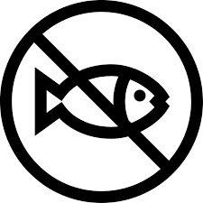
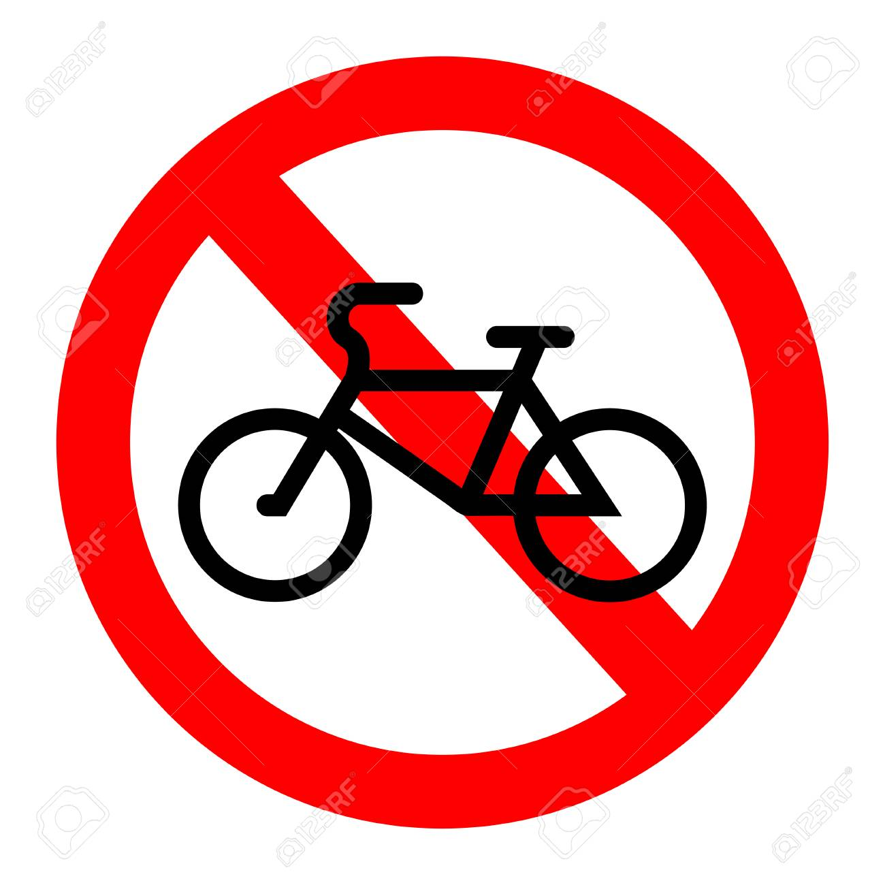

<!--
@license
Copyright (c) 2016 The Polymer Project Authors. All rights reserved.
This code may only be used under the BSD style license found at http://polymer.github.io/LICENSE.txt
The complete set of authors may be found at http://polymer.github.io/AUTHORS.txt
The complete set of contributors may be found at http://polymer.github.io/CONTRIBUTORS.txt
Code distributed by Google as part of the polymer project is also
subject to an additional IP rights grant found at http://polymer.github.io/PATENTS.txt
-->

<link rel="import" href="../bower_components/polymer/polymer-element.html">
<link rel="import" href="../bower_components/paper-card/paper-card.html">
<link rel="import" href="../bower_components/l2t-paper-slider/l2t-paper-slider.html">
<link rel="import" href="shared-styles.html">

<dom-module id="my-guillermo">
  <template>
    <style include="shared-styles">
      :host {
        display: block;

        padding: 10px;
      }

      l2t-paper-slider {
        --paper-slide-height: 300px;
        --paper-slide-dot-styles:{
          --paper-slide-dot-selected: #154360 ;
          --paper-slide-dot:  #5dade2 ;
        };
      }
      @media(max-width: 600px) {
        img{
          width:200px;
        }
        img.smallscreen{
          width:300px;
        }
      }

      paper-slide {
        line-height: 200px;
        font-size: 64px;
        text-align: center;
        vertical-align: middle;
        color: white;
        background: white;
      }
    </style>
    <script src="../bower_components/webcomponentsjs/webcomponents-lite.js"></script>

    <paper-card>
      <div class="card-content">
        <div class="cafe-header">
          <h1>¿Quien soy?</h1>
        </div>
        <p class="cafe-light">Mi nombre completo es Luis Guillermo Vélez Segura. Tengo 18 años y vivo en Bogotá Colombia.</p>
      </div>

    </paper-card>

    <paper-card>
      <div class="card-content">
        <div class="cafe-header">
          <l2t-paper-slider auto-progress slide-duration="3">
            <paper-slide> </paper-slide>
            <paper-slide> </paper-slide>
            <paper-slide>  </paper-slide>
          </l2t-paper-slider>
          <h1>¿Qué me gusta?</h1>
        </div>
        <p class="cafe-light">Me gustan mucho los videojuegos de todo tipo. Mi deporte favorito es la natación, aunque no lo practico mucho. Mi comida favorita es la lasaña y mi color favorito es el azul metal.</p>
      </div>

    </paper-card>

    <paper-card>
      <div class="card-content">
        <div class="cafe-header">
          <l2t-paper-slider auto-progress slide-duration="3">
            <paper-slide>  </paper-slide>
            <paper-slide> </paper-slide>
          </l2t-paper-slider>
          <h1>¿Qué me disgusta?</h1>
        </div>
        <p class="cafe-light">No me gusta leer. De hecho odio los libros y todas sus formas de presentaciones. No me gutsa la comida de mar en general, solo tolero los camarones</p>
      </div>

    </paper-card>


    <paper-card>
      <div class="card-content">
        <div class="cafe-header">
          <l2t-paper-slider auto-progress slide-duration="3">
            <paper-slide >  </paper-slide>
            <paper-slide> </paper-slide>
          </l2t-paper-slider>
          <h1>¿Como me veo en el futuro?</h1>
        </div>
        <p class="cafe-light">A futuro  me veo ejerciendo mi carrera como programador de videojuegos en una gran empresa como puede ser SQUARE ENIX, Epic Games entre otras</p>
      </div>

    </paper-card>
    <paper-card>
      <div class="card-content">
        <div class="cafe-header">
          <l2t-paper-slider auto-progress slide-duration="3">
            <paper-slide>  </paper-slide>
            <paper-slide> </paper-slide>
            <paper-slide> </paper-slide>
            <paper-slide> </paper-slide>
          </l2t-paper-slider>
          <h1>Datos curiosos sobre mi</h1>
        </div>
        <div class="cafe-light">
          <ul>
            <li>No se montar cicla</li>
            <li>Aprendi a nadar a los 10 años</li>
            <li>Nunca me he roto un hueso</li>
            <li>Me gradue a los 17 años del colegio</li>
            <li>He tenido 3 mascotas</li>
          </ul>
        </div>
      </div>

    </paper-card>
  </template>

  <script>
    class myGuillermo extends Polymer.Element {
      static get is() { return 'my-guillermo'; }
    }

    window.customElements.define(myGuillermo.is, myGuillermo);
  </script>
</dom-module>
